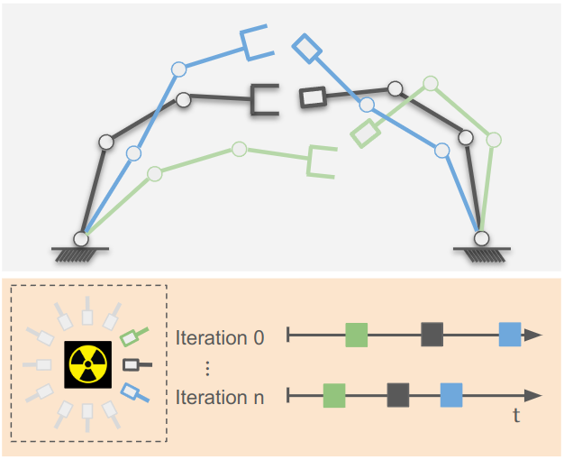
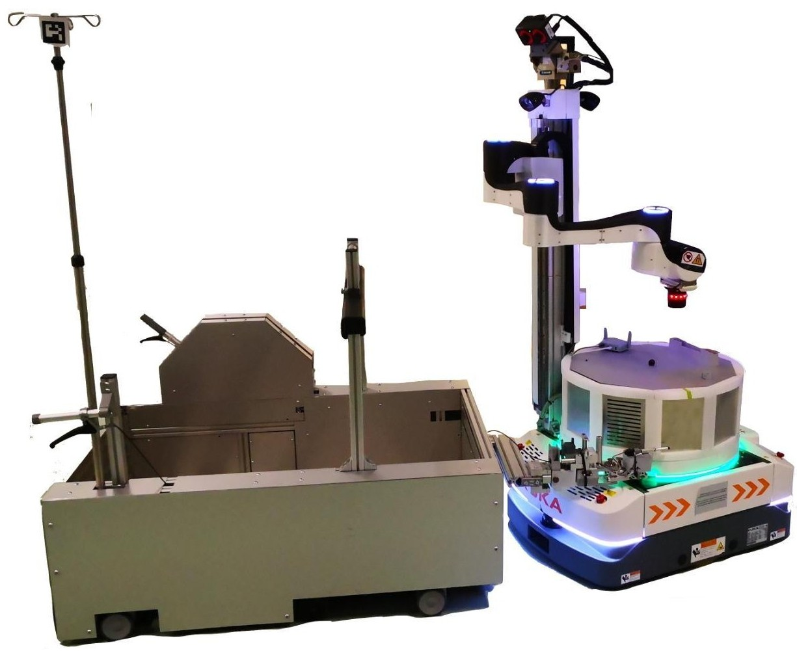
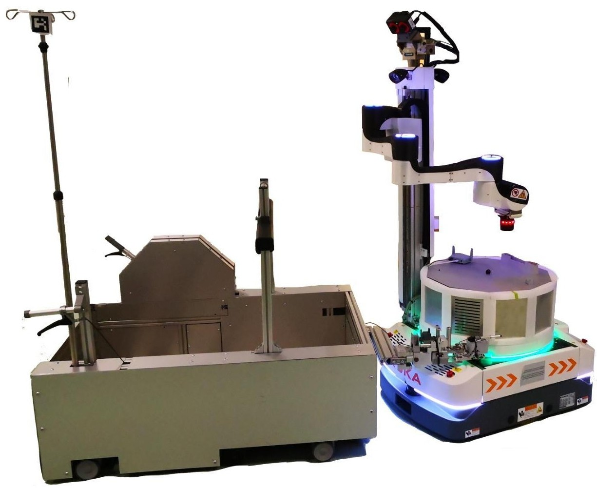
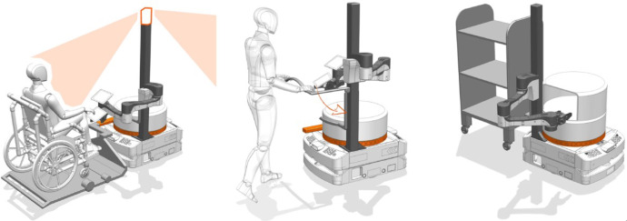

|
I am a PhD student at the Karlsruhe Institute of Technology (KIT), Germany. Meanwhile, I am a research associate at the Institute for Robotics and Autonomous Systems (IRAS) at the University of Applied Sciences.
My research focuses on developing contact-rich manipulation methods based on dual-arm robots under the supervision of Björn Hein.
Email / Google Scholar / Github / LinkedIn |
{kind=link}
|
Representative papers are highlighted. |
|
Yucheng Tang, Tao Chen Björn Hein, Ilshat Mamaev Preprint, Under Review arXiv This paper proposes a learning-based Nonlinear Model Predictive Control (NMPC) framework that integrates Control Barrier Functions (CBFs) with sampling-based non-convex reachable sets to improve feasibility and safety for complex systems such as tractor-trailers. Alpha Shapes are employed to extract the boundary of the non-convex reachable set and train a neural network to estimate the area of the infeasible region online, incorporating this estimate into the NMPC objective function to enhance optimization feasibility Numerical experiments demonstrate that the proposed method outperforms traditional approaches in complex obstacle scenarios, offering better feasibility, controllability, and safety guarantees |
|

Yucheng Tang, Xi Huang, Yongzhou Zhang, Tao Chen Ilshat Mamaev, Björn Hein Preprint, Under Review arXiv This paper introduces ETA-IK, a novel inverse kinematics method that directly optimizes execution time for dual-arm robots by leveraging redundancy and learning a time approximation model. A neural network is trained to estimate motion execution time based on joint configurations, enabling integration of time-aware cost into a multi-objective IK framework that also implicitly considers collisions and joint limits Experimental results on a dual-arm system (UR5 and KUKA iiwa) show that ETA-IK significantly reduces execution time and improves motion efficiency compared to traditional IK solvers, especially in collision-prone environments. |
 

Yucheng Tang, Tara Chand, Ilshat Mamaev, Björn Hein, Ilona Croy 2025 IEEE-RAS-EMBS International Conference on Rehabilitation Robotics (ICORR) arXiv This study investigates whether robots can replicate the emotional and sensory qualities of human touch using a soft brush and Cartesian Dynamic Movement Primitives (DMPs) to generate human-like stroking on a participant’s forearm. A user study with 34 participants compared stroking velocity and trajectory predictability, showing that strokes at 3 cm/s were consistently rated as more pleasant, and human touch was more often perceived as “human-like” than robot touch. |
|

Andreas Zachariae, Frederik Plahl, Yucheng Tang, Ilshat Mamaev, Björn Hein, Christian Wurll, Robotics and Autonomous Systems 2024, Volume 179 Project Page / Paper The paper presents PeTRA, an autonomous hospital transport robot system designed to support caregivers by handling patient transport tasks, integrating emergency detection and multimodal human-robot interaction. It introduces a novel framework for high-level task control, combining BT with ROS 2 using an HFSM, alongside a machine learning-based visual emergency detection system trained on a newly collected RGB-D dataset. A multi-modal UI optimized for elderly persons is proposed and validated in three German hospitals, PeTRA demonstrates improved usability and safety in real-world hospital environments, offering valuable insights for deploying assistive robots in healthcare settings. |

Yucheng Tang, Ilshat Mamaev, Björn Hein, 2024 IEEE 20th International Conference on Automation Science and Engineering (CASE) Paper This paper proposes a novel capacitive sensing system that enables autonomous mobile robots to estimate trolley pose and center of mass (CoM) without relying on external infrastructure or vision-based sensors. By combining capacitive proximity sensing with a weighted PCA algorithm and capacitive tactile sensing, the system achieves accurate profile pose estimation for drive-in tasks and reliable CoM estimation for load balancing. Experimental results show that the system achieves high repeatability and robustness in narrow logistics environments, offering an infrastructure-independent, multimodal solution for warehouse automation. |
|
Yucheng Tang, Ilshat Mamaev, Jing Qin, Christian Wurll, Björn Hein 2023 IEEE/RSJ International Conference on Intelligent Robots and Systems (IROS) Paper This paper proposes a novel reachability-aware nonlinear MPC framework that integrates discrete-time control barrier functions (CBFs) and symbolic regression-based reachable sets to improve backward obstacle avoidance for tractor-trailer systems. By approximately estimating by line segments and minimizing the intersection between the reachable set and non-safe regions, the method enhances both safety and optimization feasibility compared to traditional MPC or CBF-based approaches. Simulation and real-robot experiments (on SLAMdog 2.0 with a trailer) demonstrate that the proposed RA-NMPC-DCBF approach achieves superior obstacle avoidance performance with shorter horizons and better real-time feasibility. |

Yucheng Tang, Wei Shen, Ilshat Mamaev, Björn Hein 2023 IEEE 19th International Conference on Automation Science and Engineering (CASE) Paper The paper proposes a motion planning framework for physically coupled dual-arm robots that optimizes Cartesian stiffness and generates synchronized trajectories for flexible manufacturing tasks like sheet metal bending. Using analytical inverse kinematics and Particle Swarm Optimization (PSO) combined with Online Trajectory Generation (OTG), the method maximizes end-effector force capability while maintaining joint continuity and respecting kinematic constraints. Experiments with two Franka Emika robots demonstrate a threefold increase in applied force in single-arm tests and up to 732 N in dual-arm cooperative tasks, validating the method’s effectiveness for high-stiffness applications. |
Yucheng Tang, Ilshat Mamaev, Hosam Alagi, Bengt Abel, Björn Hein
Interactive Collaborative Robotics (ICR 2021)
Paper
|
The website is based on the code from source code! |